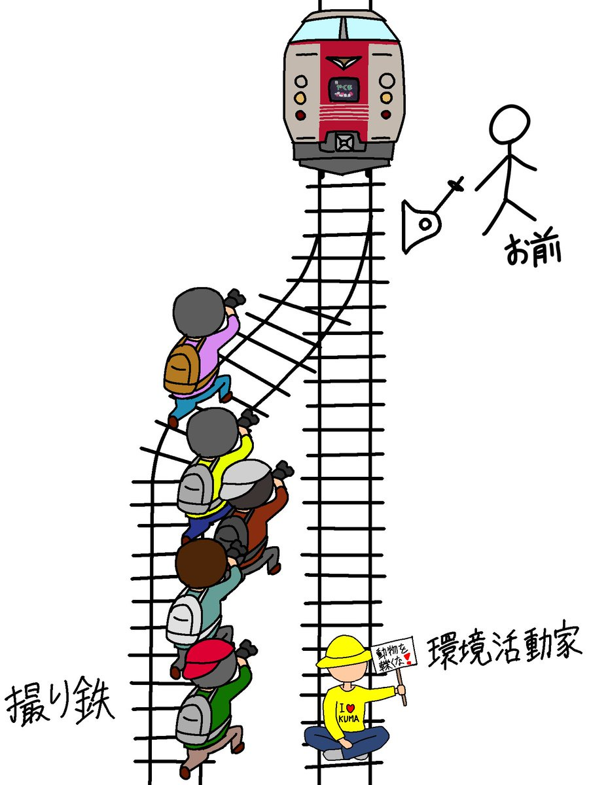

왼쪽 민폐 철덕
오른쪽 환경 운동가
그냥 복선 드리프트 하면 안되나?

왼쪽 민폐 철덕
오른쪽 환경 운동가
그냥 복선 드리프트 하면 안되나?
철덕은 찍느라 못피할텐데 환경운동가는 지 목숨 위험할땐 피함 고로 환경운동가쪽으로 하면 됨
그러니까 철덕쪽으로 해야되는거 아니고?
ㅇㅋ 이댓글보고 최다킬 1등찍음
이게정답이야
정답이다! 연금술사
어케하면 다죽일수있을지 고민하면됨
반은 옆으로 보내고 반은 직진시켜서 둘다보내면 안되나
일단 5명 먼저 보내주고 다음 열차가 직진하자
탈선 시켜서 스트라이크 노려봄
JUST STOP OIL 하던 애들 지금 정말로 석유가 멈춰서 입 싹 닫고 있음.
환경운동가가 철도가지고 ㅈㄹ을함? 전철 친환경적인거 아니었음? 일단 다 죽이고 생각하자
걸어다녀도 ㅈㄹ 할 놈들임 ㅋㅋㅋ
철도가 동력으로 움직이는 교통수단 중에서 환경부하 제일 적은데
가짜 환경 운동가다!
왼쪽이 더 자주 오니까 기회 있을 때 오른쪽을 밀저
앞으로한번갔다가 뒤로 돌아오고 다시 앞으로
드리프트해서 뒤는 직진 앞은 옆차선타게 못해?
왼쪽으로 기차보내고 1:1은 가서 패야지 뭐
생각해보면 환경운동가들은 누구보다 환경이 좋아지길 바라지 않을것 같음
그냥 한대 더 보내라 빨리
에뜨차다 나이스~